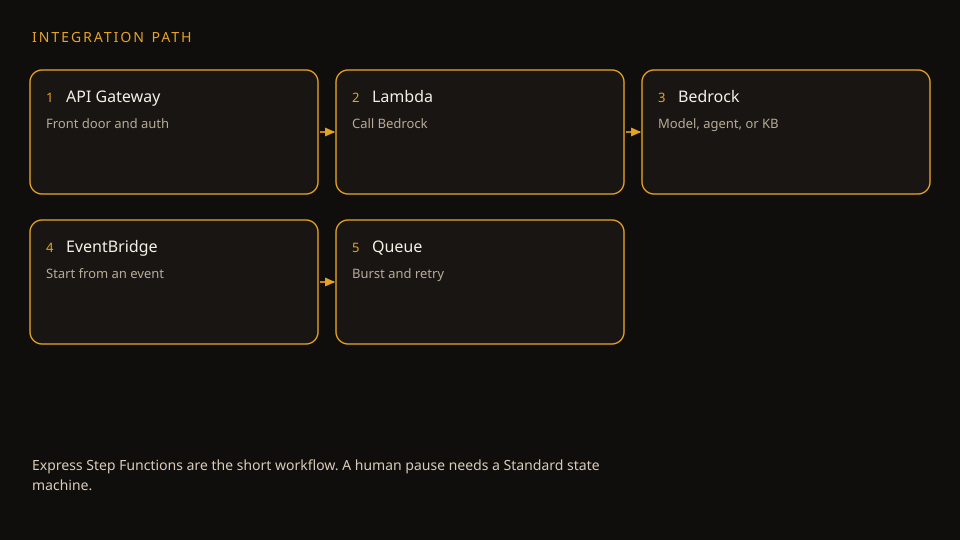

AWS Certified Generative AI Developer — Professional
The AWS underneath the AI exam
This companion walks the AWS Cloud Foundations volume end to end: the world map, identity, storage, compute, network, and the services that wire a GenAI app together.
Read inward. The claim is the outer shell. Under it: the mechanism, the numbers, a worked scenario, and the exam trap.
Outer layer Claim
Start here
Companion · AIP-C01 prerequisite · narrated from the source volume
The world map table
Watercolor: The world map table. Original AI watercolor illustration made for this page.
The world map table
Mechanism
Companion · AIP-C01 prerequisite · narrated from the source volume
This companion walks the AWS Cloud Foundations volume end to end: the world map, identity, storage, compute, network, and the services that wire a GenAI app together.
Companion to the AWS Cloud Foundations volume of the AWS AIP-C01 Study Guide · Source page: prereq-aws-cloud-foundations.html
SOURCE / INTERPRETATION: HOW TO READ THE TAGS
From the lesson SOURCE: the idea, and every number beside it, comes from the cited section of the source. The phrasing is the companion's.
Illustration INTERPRETATION: invented by the companion: an analogy, a toy with made-up values, or a what-if. Never source content.
companion INTERPRETATION: companion voice: the idea above the tag is from the source. The generalization below it is the companion's.
Unit 1 · Method
Numbers and limits
Volatile. Quotas, model IDs, and prices move. The prose below was checked against AWS documentation on 2026-09-28. Re-check any quota or price before exam day.
This section states no service quota. Do not memorize a number the text does not give you.
Worked scenario
Work “Start here” against one stem. Name the constraint (freshness, citation, latency, a cost ceiling, or a control that must block) and pick the smallest managed mechanism that meets every constraint.
Exam trap
Illustration INTERPRETATION: invented by the companion: an analogy, a toy with made-up values, or a what-if.
Outer layer Claim
How to use this volume
The volume rebuilds the base facts in the order AWS took shape: world map first, then identity, storage, compute, network, and data.
Retrieval-augmented generation keeps facts outside the weights. The model answers from chunks it can cite.
Original diagram. The flow follows Amazon Bedrock Knowledge Bases: ingest, chunk, embed, retrieve, generate.
Ingestion loads documents from a source such as S3.
Chunking splits them. The strategy is fixed on the data source.
One embedding model writes vectors into a store.
A query embeds with the same model and fetches near chunks.
The model answers from those chunks and returns citations.
Mechanism
From the lessonHow to use this volume
The volume rebuilds the base facts in the order AWS took shape: world map first, then identity, storage, compute, network, and data. The last sections wire the parts into one GenAI design. The order matters because AIP-C01 tests base facts inside a scenario, never as bare trivia. The source gives one test case in full: a team fine-tunes a model each week, keeps 7 years of train data for audits, and reads the last month of data often. The cheap design that meets the audit rule needs S3 storage classes, lifecycle rules, and KMS at once. One scenario, three base facts.
7 years audit keep in the source scenario, met by classes, lifecycle, and KMS Nugget · From the lesson How to use this volume The lesson The exam hides base facts inside scenarios, so each fact must come with its use case. Why it matters. A fact on its own earns no points. The scenario form asks for a design that holds cost, audit, and speed at once, and each base fact covers one leg of the three. Transfer. Learn each tool with the constraint it answers. Recall then runs from constraint to tool. UNIT 01 · AIP-C01
Unit 2 · World map
Numbers and limits
Volatile. Quotas, model IDs, and prices move. The prose below was checked against AWS documentation on 2026-09-28. Re-check any quota or price before exam day.
This section states no service quota. Do not memorize a number the text does not give you.
Worked scenario
Work “How to use this volume” against one stem. Name the constraint (freshness, citation, latency, a cost ceiling, or a control that must block) and pick the smallest managed mechanism that meets every constraint.
Exam trap
The volume rebuilds the base facts in the order AWS took shape: world map first, then identity, storage, compute, network, and data.
Outer layer Claim
Watch first: the full foundations course
One free course covers most of this volume: the Cloud Practitioner course on freeCodeCamp, in the CLF-C02 form, at about 14 hours.
Spend follows tokens and the capacity you reserve. Cut tokens before you buy throughput.
Original diagram. Prices and provisioned-throughput terms change. Confirm them on the official pricing and quotas pages.
Shorten the prompt and the retrieved context first.
Cache a repeated prefix when the provider supports prompt caching.
Route easy turns to a cheaper model. Escalate the hard ones.
Batch the work that nobody is waiting on.
Buy provisioned throughput only for a proven steady load, and call the provisioned ARN.
Mechanism
From the lessonWatch first
One free course covers most of this volume: the Cloud Practitioner course on freeCodeCamp, in the CLF-C02 form, at about 14 hours. The source treats the course as a mate to the text: watch a chapter when a section feels thin, at 1.5x or 2x speed. The course walks shared duty, IAM, S3 storage classes, EC2 price, and Aurora in exam words, and ships a free practice exam.
The world map has three layers. A Region is a geographic area. Each Region is independent, and AWS copies no data across Regions unless a customer asks. A Region choice rests on four facts: user distance, law on data home, price, and service reach. An Availability Zone, or AZ, is one or more apart data centers inside a Region, each with own power, cool plant, and network. A Region holds two or more AZs. Edge locations form the third layer: small points in hundreds of cities that cache content and answer DNS near users, and run no customer app. Route 53 is the AWS DNS service. High availability on the exam almost always means two or more AZs.
2+ AZs the exam mark of high availability Nugget · From the lesson Watch first The lesson High availability means two or more AZs, and data home law can force a Region move. Why it matters. The source Berlin case turns on both halves: data must stay in the EU, so the Region must change, and two AZs give the availability. A fix on one half alone fails the item. Transfer. Split each scenario into place, law, and uptime. Answer each part with its own move. UNIT 02 · AIP-C01
Unit 3 · Identity
Numbers and limits
Volatile. Quotas, model IDs, and prices move. The prose below was checked against AWS documentation on 2026-09-28. Re-check any quota or price before exam day.
One free course covers most of this volume: the Cloud Practitioner course on freeCodeCamp, in the CLF-C02 form, at about 14 hours.
Worked scenario
Work “Watch first: the full foundations course” against one stem. Name the constraint (freshness, citation, latency, a cost ceiling, or a control that must block) and pick the smallest managed mechanism that meets every constraint.
Exam trap
Exam trap: a real service used for the wrong job, or a heavier ladder rung than the stem requires. Match the verb in the stem — cite, act, block, cheapen, or measure — to one mechanism here.
Outer layer Claim
3. IAM: identity and access management
Each AWS request passes through IAM first. IAM answers two questions: who are you, and what may you do?
The gatehouse desk
Watercolor: The gatehouse desk. Original AI watercolor illustration made for this page.
The gatehouse desk
Mechanism
From the lesson3. IAM
Each AWS request passes through IAM first. IAM answers two questions: who are you, and what may you do? Three actors do the work. A user is a set identity, in most cases a person. A group bundles users with shared rights. A role is a temp badge a trust party picks up, uses, and puts back. A user holds long-term keys, and a leak holds force till a revoke lands. A role hands out temp keys that die on their own, in most cases within hours. The rule follows: people sign in with short sessions, and programs and services use roles. Long-term access keys are a last resort. The root user is the account itself. Lock the root down on day one: a strong password, a second factor check, no access keys, and no daily use.
Policies: the rule sheets
From the lessonPolicies
A policy is a JSON sheet that says allow or deny. Each rule names an Effect, the Action set of API calls, and the Resource set in ARN form, the Amazon address form for all resources. A Condition can bind a rule to facts such as source address or a second factor check. Identity policies attach to users, groups, or roles. Resource policies attach to the item at stake, such as a bucket or a key, and name who may touch the item. In one account, an allow from either side is enough. AWS-managed policies come from AWS. Customer-managed policies belong to the account. Inline policies belong to one identity and die with that identity.
How AWS decides: deny wins
From the lessonHow AWS decides
The order is short. Open the steps in turn.
Step 1: Start state
Each request starts in a deny state. The name is implicit deny: no allow on record means no access.
Step 2: Explicit deny check
One explicit Deny in any policy ends the request at once. No allow can beat an explicit deny.
Step 3: Allow check
With no explicit deny in force, one explicit Allow in an identity policy or a resource policy moves the request to the border checks.
Step 4: Border checks
Permission borders, Service Control Policies at the organization level, and session policies can shrink rights. No border can grow rights. A pass on all checks means the request goes ahead.
Permission boundaries: the ceiling
From the lessonPermission boundaries
A permission boundary is a managed policy that caps what an identity can ever do. Real rights are the overlap of identity policies and the border. Admins use the cap to hand work down in safety: a team lead may grant a team any right under the cap, and no right past the cap. A new border can only narrow access, and a border removal can only widen access.
IAM Identity Center: SSO for humans
From the lessonIAM Identity Center
Real firms make no IAM user per staff member. The firm links its company login to IAM Identity Center, the AWS single sign-on service for the workforce. Staff get short AWS access through permission sets: one login, many accounts, no long-term keys in the wild. Four patterns cover most IAM items. An EC2 instance that must read S3 gets an IAM role, never keys in code. A developer who needs admin for two hours takes on a role. A cap on team leads takes a permission boundary. A partner firm that needs bucket read access gets a cross-account role or a bucket policy that names the partner account. Two traps close the section: groups hold no groups, and a user delete kills the keys of that user, which can break apps that run on those keys.
1 deny one explicit deny beats every allow Nugget · From the lesson How AWS decides The lesson One explicit deny beats all allows, and borders can only shrink rights. Why it matters. The order settles most IAM items in seconds. A stem with an explicit deny needs no allow count. A stem that asks a border to grant a right has a false premise. Transfer. Learn the decide order, not the rule list. Order turns a pile of rules into one path. UNIT 03 · AIP-C01
Unit 4 · Storage
Numbers and limits
Volatile. Quotas, model IDs, and prices move. The prose below was checked against AWS documentation on 2026-09-28. Re-check any quota or price before exam day.
1 deny one explicit deny beats every allow Nugget · From the lesson How AWS decides The lesson One explicit deny beats all allows, and borders can only shrink rights.
Worked scenario
Work “3. IAM: identity and access management” against one stem. Name the constraint (freshness, citation, latency, a cost ceiling, or a control that must block) and pick the smallest managed mechanism that meets every constraint.
Exam trap
Real firms make no IAM user per staff member. The firm links its company login to IAM Identity Center, the AWS single sign-on service for the workforce.
Outer layer Claim
4. S3: object storage
S3 stores objects: a file plus facts about the file. Objects live in buckets. A bucket name is one of a kind across all of AWS, and each bucket lives in one Region.
Retrieval-augmented generation keeps facts outside the weights. The model answers from chunks it can cite.
Original diagram. The flow follows Amazon Bedrock Knowledge Bases: ingest, chunk, embed, retrieve, generate.
Ingestion loads documents from a source such as S3.
Chunking splits them. The strategy is fixed on the data source.
One embedding model writes vectors into a store.
A query embeds with the same model and fetches near chunks.
The model answers from those chunks and returns citations.
Mechanism
From the lesson4. S3
S3 stores objects: a file plus facts about the file. Objects live in buckets. A bucket name is one of a kind across all of AWS, and each bucket lives in one Region. Object count has no cap, and one object can reach 5 TB. S3 gives durability of 99.999999999 percent, eleven nines, through copies across at least three AZs.
Storage classes: pay for how often you touch it
From the lessonStorage classes
Class choice follows touch rate. S3 Standard fits hot data with frequent reads: top storage price, no fetch fee. Intelligent-Tiering fits a shift or unknown pattern: AWS moves objects across tiers for a small watch fee. Standard-IA fits rare reads such as backups and month reports: cheap storage, a fee per fetch, and a 30 day minimum stay. Glacier Instant Retrieval fits an archive with a rare need for millisecond fetch, at a 90 day minimum. Glacier Flexible Retrieval fits an archive with fetch in minutes to hours, at a 90 day minimum. Glacier Deep Archive is the cheap class: fetch takes 12 to 48 hours, the minimum stay is 180 days, and the fit is a 7 to 10 year keep for rule sets. The trap sits in the minimums: delete a Deep Archive object at day 60, and the bill still covers 180 days.
Versioning, lifecycle, replication
From the lessonVersioning, lifecycle, replication
Version control keeps each form of an object. An overwrite or a delete leaves the old form in place, and MFA Delete can demand a hardware code for a full removal. Lifecycle rules move or delete objects on a schedule with no hand work. The source canon path for train logs runs Standard for 30 days, Standard-IA next, Glacier Flexible at 90 days, and expiry at 7 years. Replication copies new objects to a second bucket on its own: across Regions, or in one Region. Replication needs version control on in both buckets. The exam words for replication are low latency on two land masses, or a rule copy in a second Region.
Encryption and sharing
From the lessonEncryption and sharing
Rest cipher work has three server-side forms. SSE-S3 uses AWS-held keys with AES-256 at no fee. SSE-KMS uses customer KMS keys, so CloudTrail logs each cipher act and a key switch-off revokes access. SSE-C takes a customer key with each request. Data in flight uses TLS at all times. A presigned URL shares one private file with no bucket open step: a sign link that works till its end time, from minutes to 7 days out, and the bucket stays private. Four key points close the section. S3 reads are strong consistent in current form. Block Public Access at account level bars a public bucket. Version control plus Object Lock gives write once, read many holds that no user, root in the set, can break before the hold date. A static site hosts on S3 with CloudFront in front, not on EC2.
Bar chart of minimum stay: Standard-IA 30 days, Glacier Instant Retrieval 90 days, Glacier Flexible Retrieval 90 days, Glacier Deep Archive 180 days
180 days Deep Archive minimum stay, billed in full on early delete Nugget · From the lesson Storage classes The lesson A delete before the minimum stay still bills the full minimum days. Why it matters. Cheap archive math fails when the keep time is short. The source case deletes at day 60 in Deep Archive and pays for 180 days. The minimum turns a price compare into a time compare. Transfer. Check the term before the rate. A low rate with a long term can cost more than a high rate with no term. UNIT 04 · AIP-C01
7 days top span of a presigned URL, from minutes up Nugget · From the lesson Encryption and sharing The lesson Share one private file with a presigned URL, and the bucket never opens. Why it matters. The source case sends one invoice for a 24 hour window. A public bucket window, however short, is the leak path. The sign link grants one object to one holder for a set span. Transfer. Grant the small unit for the short span. Scope and time do the guard work. UNIT 04 · AIP-C01
Unit 5 · Compute
Numbers and limits
Volatile. Quotas, model IDs, and prices move. The prose below was checked against AWS documentation on 2026-09-28. Re-check any quota or price before exam day.
S3 stores objects: a file plus facts about the file. Objects live in buckets. A bucket name is one of a kind across all of AWS, and each bucket lives in one Region.
Version control keeps each form of an object. An overwrite or a delete leaves the old form in place, and MFA Delete can demand a hardware code for a full removal.
Rest cipher work has three server-side forms. SSE-S3 uses AWS-held keys with AES-256 at no fee.
Worked scenario
Work “4. S3: object storage” against one stem. Name the constraint (freshness, citation, latency, a cost ceiling, or a control that must block) and pick the smallest managed mechanism that meets every constraint.
Exam trap
Class choice follows touch rate. S3 Standard fits hot data with frequent reads: top storage price, no fetch fee.
7 days top span of a presigned URL, from minutes up Nugget · From the lesson Encryption and sharing The lesson Share one private file with a presigned URL, and the bucket never opens.
Outer layer Claim
5. EC2: rented computers
EC2 rents virtual machines by the second. Pick a size, pick an OS image (an AMI), launch in a subnet, and the machine is yours.
Read every major topic from the outside in. The outer sentence is the claim. The core is the mistake the exam expects you to make.
Original diagram for this treatise.
Name what the thing is and why AWS shipped it.
Follow the mechanism one hop at a time.
Separate stable ideas from quotas and prices.
Run one scenario with every constraint visible.
State the trap before you look at the options.
Mechanism
From the lesson5. EC2
EC2 rents virtual machines by the second. Pick a size, pick an OS image (an AMI), launch in a subnet, and the machine is yours. AWS owns the hardware. All above the hypervisor is yours, OS patch work in the set.
Instance types: the letter tells you the strength
From the lessonInstance types
A type name such as m7i.large starts with a family letter. T and M are general purpose and balanced. C is compute heavy. R and X are memory heavy. I and D are storage heavy with fast local disks. P and G carry GPUs, and Inf and Trn are AWS chips for inference and train work. The exam gives the load in words, such as a memory-heavy database, and asks for the family.
Pricing: five ways to pay
From the lessonPricing
On-Demand has no pledge: pay per second at the top price, with full flex for spiky or unknown loads. Spot bids on spare room at up to 90 percent off, and AWS can take the machine back with a 2 minute warn: a fit for batch jobs and train work that can take a break. Reserved Instances pledge 1 or 3 years to a type and Region and save up to 72 percent. Savings Plans pledge a dollar per hour spend for 1 or 3 years, save up to 72 percent, and keep type flex. Dedicated Hosts give a whole physical server for license or rule needs, at the top cost.
Storage: three very different disks
From the lessonStorage
EBS is the normal boot disk: a network disk that holds past a stop, with snapshot copies to S3 for backup. One EBS volume binds to one instance in the standard case. Instance store is the raw disk in the host: fast and free, and all data on the disk dies at a stop. EFS is a shared NFS file system that many instances mount at once, across AZs. Key points: a shared file system for 20 web servers means EFS, a disk that must hold past a stop means EBS, and a boot script at first launch means user data. An Auto Scaling group plus a load balancer spreads load across instances.
Bar chart: Spot up to 90 percent off, Reserved Instances up to 72 percent off, Savings Plans up to 72 percent off
90% off top Spot discount, with a 2 minute reclaim warn Nugget · From the lesson Pricing The lesson Spot fits work that can take a break, and the 2 minute warn is the price of the discount. Why it matters. The source night job runs 3 hours, splits across machines, and can retry. Each trait maps to Spot. A job with no retry path pays full price for a reason. Transfer. Match the discount to the fault plan. Cheap compute with no retry path is a risk buy, not a save. UNIT 05 · AIP-C01
Unit 6 · Network
Numbers and limits
Volatile. Quotas, model IDs, and prices move. The prose below was checked against AWS documentation on 2026-09-28. Re-check any quota or price before exam day.
EC2 rents virtual machines by the second. Pick a size, pick an OS image (an AMI), launch in a subnet, and the machine is yours.
On-Demand has no pledge: pay per second at the top price, with full flex for spiky or unknown loads.
90% off top Spot discount, with a 2 minute reclaim warn Nugget · From the lesson Pricing The lesson Spot fits work that can take a break, and the 2 minute warn is the price of the discount.
Worked scenario
Work “5. EC2: rented computers” against one stem. Name the constraint (freshness, citation, latency, a cost ceiling, or a control that must block) and pick the smallest managed mechanism that meets every constraint.
Exam trap
Exam trap: a real service used for the wrong job, or a heavier ladder rung than the stem requires. Match the verb in the stem — cite, act, block, cheapen, or measure — to one mechanism here.
Outer layer Claim
6. VPC: your private network
A VPC is an own apart network inside AWS. The owner draws the map: the IP range, the subnets, the roads, and the gates.
The walled garden network
Watercolor: The walled garden network. Original AI watercolor illustration made for this page.
The walled garden network
Mechanism
From the lesson6. VPC
A VPC is an own apart network inside AWS. The owner draws the map: the IP range, the subnets, the roads, and the gates. No traffic moves in or out till a road exists.
The pieces, one by one
From the lessonThe pieces
A VPC starts with a CIDR block, a private IP range such as 10.0.0.0/16 with 65,536 addresses. Subnets carve the range, and each subnet pins to one AZ. AWS holds 5 addresses per subnet, so a /24 subnet gives 251 in use. A route table is the road map. A subnet is public when its route table sends all traffic, 0.0.0.0/0, to an internet gateway. The NAT gateway sits in a public subnet and gives private subnets a one-way door out: instances can reach out, and no party outside can reach in. VPC endpoints let private subnets reach AWS services with no internet path at all. Gateway endpoints for S3 and DynamoDB are free and live in the route table. Interface endpoints put a private IP in the subnet for most other services.
Security groups vs NACLs: the exam's favorite pair
From the lessonSecurity groups vs NACLs
A security group is a firewall at the instance. The group is stateful: allow port 80 in, and the reply goes out on its own. Rules are allow only, and rules add up. A NACL is a firewall at the subnet. The NACL is stateless: allow port 80 in, and the reply ports, 1024 to 65535, need an allow out as well. NACL rules carry numbers and run in number order, and a NACL can deny in plain form. Block one bad IP is NACL work. The source pairs a short video of under five minutes with this section: private ranges, public and private subnets, gateway kinds, and state facts.
251 usable addresses in a /24 subnet after the AWS hold of 5 Nugget · From the lesson The pieces The lesson A /24 subnet holds 256 addresses, and AWS holds 5, so 251 stay in use. Why it matters. Size math on the exam starts from this hold. A plan that counts 256 hosts in a /24 overstates room by 5, and a tight design fails at launch. Transfer. Subtract the house hold before a count of free room. The house hold is part of the spec. UNIT 06 · AIP-C01
1 of 2 of the firewall pair, only the NACL can deny Nugget · From the lesson Security groups vs NACLs The lesson Of the pair, only the NACL can deny, and the pair splits by place: instance or subnet. Why it matters. A block-one-IP stem needs a deny rule at the subnet edge. A security group has no deny form at all. Place and form pick the tool in one step. Transfer. For each guard, learn place, state habit, and rule forms. Three facts sort all pair items. UNIT 06 · AIP-C01
Unit 7 · Sight
Numbers and limits
Volatile. Quotas, model IDs, and prices move. The prose below was checked against AWS documentation on 2026-09-28. Re-check any quota or price before exam day.
A security group is a firewall at the instance. The group is stateful: allow port 80 in, and the reply goes out on its own.
Worked scenario
Work “6. VPC: your private network” against one stem. Name the constraint (freshness, citation, latency, a cost ceiling, or a control that must block) and pick the smallest managed mechanism that meets every constraint.
Exam trap
Exam trap: a real service used for the wrong job, or a heavier ladder rung than the stem requires. Match the verb in the stem — cite, act, block, cheapen, or measure — to one mechanism here.
Outer layer Claim
9. Observability: CloudWatch, CloudTrail, Config
Three services answer three apart questions. CloudWatch asks how healthy a system is right now: metrics, alarms, logs, and boards.
Identity, encryption, network path, and audit are different controls. One of them does not replace the others.
Original diagram. Service roles follow the AIP-C01 exam guide in-scope list: IAM, KMS, Amazon VPC, AWS PrivateLink, CloudTrail, CloudWatch.
IAM decides who may call the API. A guardrail does not.
KMS encrypts data at rest where the service supports a customer key.
A VPC endpoint keeps the call off the public internet.
CloudTrail records who called which API.
Invocation logs and CloudWatch hold the prompt content and the block metrics.
Mechanism
From the lesson9. Observability
Three services answer three apart questions. CloudWatch asks how healthy a system is right now: metrics, alarms, logs, and boards. An alarm can fire at CPU above 80 percent for 5 minutes. CloudTrail asks who did what, and when: each API call in the account, with caller and time, in a log to S3. Config asks if a resource still holds a right setup: a record of resource facts over time, with rules that flag drift. A Config rule can start a Lambda fix for a bucket with no cipher cover. The exam mixes the three on purpose. Health means CloudWatch. Actor and time means CloudTrail. Setup truth means Config.
3 services CloudWatch, CloudTrail, Config: health, actor, setup truth Nugget · From the lesson 9. Observability The lesson Health, actor, and setup truth are three questions, and each has its own service. Why it matters. Config shows a group change but names no actor. CloudTrail names the actor and the time. A stem that asks who points to CloudTrail before option detail work starts. Transfer. Sort sight tools by the question form: how, who, or if-right. The form picks the tool. UNIT 07 · AIP-C01
Unit 8 · Flow
Numbers and limits
Volatile. Quotas, model IDs, and prices move. The prose below was checked against AWS documentation on 2026-09-28. Re-check any quota or price before exam day.
Three services answer three apart questions. CloudWatch asks how healthy a system is right now: metrics, alarms, logs, and boards.
Worked scenario
Work “9. Observability: CloudWatch, CloudTrail, Config” against one stem. Name the constraint (freshness, citation, latency, a cost ceiling, or a control that must block) and pick the smallest managed mechanism that meets every constraint.
Exam trap
Exam trap: a real service used for the wrong job, or a heavier ladder rung than the stem requires. Match the verb in the stem — cite, act, block, cheapen, or measure — to one mechanism here.
Outer layer Claim
10. Messaging: SQS, SNS, EventBridge
Direct calls make services wait on each other. Message paths break that link. SQS is a queue: senders drop messages in, and receivers pull at own pace.

The managed front door, the function, and the model call are three different timeouts and three different IAM roles.
Original diagram. In-scope integration services in the exam guide include API Gateway, Lambda, Step Functions, EventBridge, SQS, and SNS.
API Gateway is the front door. It authenticates and throttles.
Lambda calls Bedrock. Its timeout must exceed the model call you expect.
Step Functions owns multi-step workflows and human approval waits.
S3 events and EventBridge start work when an object arrives.
SQS absorbs bursts so a throttle does not become a dropped job.
Mechanism
From the lesson10. Messaging
Direct calls make services wait on each other. Message paths break that link. SQS is a queue: senders drop messages in, and receivers pull at own pace. Standard queues give huge scale with at-least-once delivery and best-effort order. FIFO queues give exact-once delivery and strict order at lower flow, and the name ends in .fifo. A fail sends the message back after the visibility timeout. After enough fails, the message moves to a dead-letter queue for a look. SNS is publish and subscribe: one publish to a topic, and each subscriber gets a push by mail, text, Lambda, SQS, or HTTP. One event, many takers: fan-out. EventBridge is the event bus: rules match events from AWS services, own apps, partner apps, or cron clocks, and route events to targets. EventBridge answers when X, do Y, and all clock tasks.
Unit 9 · Front door
Numbers and limits
Volatile. Quotas, model IDs, and prices move. The prose below was checked against AWS documentation on 2026-09-28. Re-check any quota or price before exam day.
This section states no service quota. Do not memorize a number the text does not give you.
Worked scenario
Work “10. Messaging: SQS, SNS, EventBridge” against one stem. Name the constraint (freshness, citation, latency, a cost ceiling, or a control that must block) and pick the smallest managed mechanism that meets every constraint.
Exam trap
Exam trap: a real service used for the wrong job, or a heavier ladder rung than the stem requires. Match the verb in the stem — cite, act, block, cheapen, or measure — to one mechanism here.
Outer layer Claim
11. API Gateway: the managed front door
API Gateway puts one managed entry in front of back ends. Clients hit one HTTPS point. The gateway holds throttle, auth, request checks, cache, and route work to Lambda, EC2, or any HTTP service.
Who is waiting picks the invocation pattern. A chat user needs tokens early. A nightly corpus can wait.
Original diagram of the sync, streaming, and batch split used in the implementation volume.
A user in a chat UI is waiting. Stream tokens.
API Gateway and Lambda have their own timeouts. A long call can die there first.
Work with no waiter goes async: queue it, or use batch inference to S3.
Retries need backoff. A tight retry loop burns the quota.
Do not put a human approval inside an Express workflow that cannot wait.
Mechanism
From the lesson11. API Gateway
API Gateway puts one managed entry in front of back ends. Clients hit one HTTPS point. The gateway holds throttle, auth, request checks, cache, and route work to Lambda, EC2, or any HTTP service. Three forms split by need. HTTP APIs are cheap and fast for Lambda and HTTP back ends. REST APIs hold the full set: usage plans, API keys, request and response maps, cache, and WAF cover. WebSocket APIs hold a two-way link for chat and live feeds. Work ships in stages such as dev and prod, each with its own URL. Auth forms cover IAM, Cognito user pools for app users, and Lambda authorizers. The source case needs per-customer rate caps, API keys for bill tiers, and cache of hot GET replies: a REST API fits, and an HTTP API lacks the usage plan and key parts.
Unit 10 · Keys
Numbers and limits
Volatile. Quotas, model IDs, and prices move. The prose below was checked against AWS documentation on 2026-09-28. Re-check any quota or price before exam day.
API Gateway puts one managed entry in front of back ends. Clients hit one HTTPS point. The gateway holds throttle, auth, request checks, cache, and route work to Lambda, EC2, or any HTTP service.
Worked scenario
Work “11. API Gateway: the managed front door” against one stem. Name the constraint (freshness, citation, latency, a cost ceiling, or a control that must block) and pick the smallest managed mechanism that meets every constraint.
Exam trap
Exam trap: a real service used for the wrong job, or a heavier ladder rung than the stem requires. Match the verb in the stem — cite, act, block, cheapen, or measure — to one mechanism here.
Outer layer Claim
12. KMS: encryption key management
KMS makes and guards cipher keys. No user sees raw key stock. A user asks KMS to cipher or read, and KMS writes each use to CloudTrail.
Identity, encryption, network path, and audit are different controls. One of them does not replace the others.
Original diagram. Service roles follow the AIP-C01 exam guide in-scope list: IAM, KMS, Amazon VPC, AWS PrivateLink, CloudTrail, CloudWatch.
IAM decides who may call the API. A guardrail does not.
KMS encrypts data at rest where the service supports a customer key.
A VPC endpoint keeps the call off the public internet.
CloudTrail records who called which API.
Invocation logs and CloudWatch hold the prompt content and the block metrics.
Mechanism
From the lesson12. KMS
KMS makes and guards cipher keys. No user sees raw key stock. A user asks KMS to cipher or read, and KMS writes each use to CloudTrail. The core trick is envelope cipher work. KMS makes a data key. The data key ciphers the file on site, at speed. KMS then ciphers the data key with the master key, and the shut data key sits with the file. A read asks KMS to open the data key, in a log act, and the data key opens the file. Key kinds split by owner: AWS-managed keys are free, one per service. Customer-managed keys carry own policies, own rotation, and an own off switch. CloudHSM gives set hardware for rule sets that demand hardware. A key policy names which IAM actors may use the key. An off switch on a key makes all data under the key unreadable at once: a safety switch and a risk in one.
2 keys a data key wrapped by a KMS master key Nugget · From the lesson 12. KMS The lesson Envelope cipher work ciphers the data key, not the data, with the master key. Why it matters. The split gives speed and control at once: bulk work stays local with the data key, and each open of that key lands in CloudTrail. An audit stem on each read points to SSE-KMS with a customer-managed key. Transfer. Wrap the small key, not the big payload. Control sits at the wrap point. UNIT 10 · AIP-C01
Unit 11 · Repeat build
Numbers and limits
Volatile. Quotas, model IDs, and prices move. The prose below was checked against AWS documentation on 2026-09-28. Re-check any quota or price before exam day.
This section states no service quota. Do not memorize a number the text does not give you.
Worked scenario
Work “12. KMS: encryption key management” against one stem. Name the constraint (freshness, citation, latency, a cost ceiling, or a control that must block) and pick the smallest managed mechanism that meets every constraint.
Exam trap
Exam trap: a real service used for the wrong job, or a heavier ladder rung than the stem requires. Match the verb in the stem — cite, act, block, cheapen, or measure — to one mechanism here.
Outer layer Claim
13. CloudFormation: infrastructure as code
CloudFormation turns a design into a text file. A template in YAML or JSON names each resource, and CloudFormation builds the set as one stack, in a set order, with a roll-back on a fail.
Read every major topic from the outside in. The outer sentence is the claim. The core is the mistake the exam expects you to make.
Original diagram for this treatise.
Name what the thing is and why AWS shipped it.
Follow the mechanism one hop at a time.
Separate stable ideas from quotas and prices.
Run one scenario with every constraint visible.
State the trap before you look at the options.
Mechanism
From the lesson13. CloudFormation
CloudFormation turns a design into a text file. A template in YAML or JSON names each resource, and CloudFormation builds the set as one stack, in a set order, with a roll-back on a fail. The same template gives the same setup in any Region. Change sets show a plan of an update before the update runs. Drift checks tell when a hand edit moved a resource off the template. StackSets send one template across many accounts and Regions. The CDK writes the same idea in Python or TypeScript. Terraform is the known third-party path. Exam matches: same setups for dev, stage, and prod means CloudFormation or CDK. A preview of an update means a change set. One template in fifty accounts means StackSets. A hand edit on a security group means drift check work.
Unit 12 · Money
Numbers and limits
Volatile. Quotas, model IDs, and prices move. The prose below was checked against AWS documentation on 2026-09-28. Re-check any quota or price before exam day.
This section states no service quota. Do not memorize a number the text does not give you.
Worked scenario
Work “13. CloudFormation: infrastructure as code” against one stem. Name the constraint (freshness, citation, latency, a cost ceiling, or a control that must block) and pick the smallest managed mechanism that meets every constraint.
Exam trap
Exam trap: a real service used for the wrong job, or a heavier ladder rung than the stem requires. Match the verb in the stem — cite, act, block, cheapen, or measure — to one mechanism here.
Outer layer Claim
14. Billing: how AWS charges you
AWS bills pay as you go: per second of EC2, per GB-month of S3, per million Lambda calls. The source works the units in plain math.
The managed front door, the function, and the model call are three different timeouts and three different IAM roles.
Original diagram. In-scope integration services in the exam guide include API Gateway, Lambda, Step Functions, EventBridge, SQS, and SNS.
API Gateway is the front door. It authenticates and throttles.
Lambda calls Bedrock. Its timeout must exceed the model call you expect.
Step Functions owns multi-step workflows and human approval waits.
S3 events and EventBridge start work when an object arrives.
SQS absorbs bursts so a throttle does not become a dropped job.
Mechanism
From the lesson14. Billing
AWS bills pay as you go: per second of EC2, per GB-month of S3, per million Lambda calls. The source works the units in plain math. Free Tier gives 750 EC2 hours a month. One all-hours instance runs 24 times 30, or 720 hours a month, so 30 hours of room stay. Lambda gives 1,000,000 free calls a month, about 33,333 a day. Billed GB-months equal GB stored times the month share: 500 GB for half a month bills 250 GB-months. Tools split by job. Cost Explorer shows where money went. Budgets alert at a set line, such as 80 percent, and can act. Cost Anomaly Detection pings on odd spikes. Cost tags split the bill by team or project. Consolidated bills through Organizations merge many accounts into one bill with volume discounts. Support plans step from Basic at no fee to Developer, Business, and Enterprise. Business and up give fast replies, and Enterprise adds a Technical Account Manager.
250 GB-months billed for 500 GB held half a month Nugget · From the lesson 14. Billing The lesson The S3 unit is the GB-month, so less data or less time each cut the bill. Why it matters. The source math shows the lever: 500 GB for half a month bills as 250 GB-months. A lifecycle rule cuts the time leg, and a delete cuts the size leg. Both legs pay. Transfer. Find the unit before a cost fix. The unit names the levers. UNIT 12 · AIP-C01
Unit 13 · Assembly
Numbers and limits
Volatile. Quotas, model IDs, and prices move. The prose below was checked against AWS documentation on 2026-09-28. Re-check any quota or price before exam day.
AWS bills pay as you go: per second of EC2, per GB-month of S3, per million Lambda calls. The source works the units in plain math.
250 GB-months billed for 500 GB held half a month Nugget · From the lesson 14. Billing The lesson The S3 unit is the GB-month, so less data or less time each cut the bill.
Worked scenario
Work “14. Billing: how AWS charges you” against one stem. Name the constraint (freshness, citation, latency, a cost ceiling, or a control that must block) and pick the smallest managed mechanism that meets every constraint.
Exam trap
Exam trap: a real service used for the wrong job, or a heavier ladder rung than the stem requires. Match the verb in the stem — cite, act, block, cheapen, or measure — to one mechanism here.
Outer layer Claim
15. Putting it together: a GenAI app on AWS
The source wires all parts into one RAG chatbot. The user hits CloudFront at the edge, then API Gateway for auth and throttle.
Retrieval-augmented generation keeps facts outside the weights. The model answers from chunks it can cite.
Original diagram. The flow follows Amazon Bedrock Knowledge Bases: ingest, chunk, embed, retrieve, generate.
Ingestion loads documents from a source such as S3.
Chunking splits them. The strategy is fixed on the data source.
One embedding model writes vectors into a store.
A query embeds with the same model and fetches near chunks.
The model answers from those chunks and returns citations.
Mechanism
From the lesson15. Putting it together
The source wires all parts into one RAG chatbot. The user hits CloudFront at the edge, then API Gateway for auth and throttle. A Lambda chat function runs in private subnets with no public IP. Its IAM role allows two acts: invoke the model, and read one docs bucket. The bucket holds version control, SSE-KMS cipher cover, and a lifecycle path to Glacier. Embeddings sit in OpenSearch Serverless. Lambda calls Bedrock through a VPC endpoint, so prompts never cross the public internet. Guardrails screen the way out. CloudWatch holds logs, CloudTrail holds the audit trail, and Config rules flag drift. Swap parts and the scenario shape shifts: an S3 event or an EventBridge clock starts batch embed work, bucket replication plus StackSets give a multi-Region form, and Budgets watch Bedrock and Lambda spend. A secure GenAI stem gets a four point check in order: network, identity, data, audit.
Unit 14 · Compression
Numbers and limits
Volatile. Quotas, model IDs, and prices move. The prose below was checked against AWS documentation on 2026-09-28. Re-check any quota or price before exam day.
This section states no service quota. Do not memorize a number the text does not give you.
Worked scenario
Work “15. Putting it together: a GenAI app on AWS” against one stem. Name the constraint (freshness, citation, latency, a cost ceiling, or a control that must block) and pick the smallest managed mechanism that meets every constraint.
Exam trap
The source wires all parts into one RAG chatbot. The user hits CloudFront at the edge, then API Gateway for auth and throttle.
Outer layer Claim
16. Exam decision trees
Seventeen rules compress the volume. Cheap storage, rare reads, years of keep: Glacier Deep Archive plus a lifecycle rule, with an eye on the 180 day minimum.
Retrieval-augmented generation keeps facts outside the weights. The model answers from chunks it can cite.
Original diagram. The flow follows Amazon Bedrock Knowledge Bases: ingest, chunk, embed, retrieve, generate.
Ingestion loads documents from a source such as S3.
Chunking splits them. The strategy is fixed on the data source.
One embedding model writes vectors into a store.
A query embeds with the same model and fetches near chunks.
The model answers from those chunks and returns citations.
Mechanism
From the lesson16. Exam decision trees
Seventeen rules compress the volume. Cheap storage, rare reads, years of keep: Glacier Deep Archive plus a lifecycle rule, with an eye on the 180 day minimum. Share one private file for a short span: a presigned URL. EC2 needs AWS access: an IAM role, never keys. A human needs temp admin: take on a role. Cap what a team can ever do: a permission boundary. A private subnet needs patch files: a NAT gateway in a public subnet. Block one IP fast: a NACL deny rule. Reach S3 or DynamoDB in private form: a gateway VPC endpoint, at no fee. Shared files with many writers across AZs: EFS. A disk that must hold past a stop: EBS. Work that can take a break, at cheap compute: Spot. SQL that scales on its own: Aurora. Key-value at any scale: DynamoDB. Code on an event for seconds to minutes: Lambda, and a run past 15 minutes is not Lambda work. Who did what: CloudTrail. Health: CloudWatch. Setup truth: Config. Fan-out to many takers: SNS. A buffer between services: SQS. Each read in a log: SSE-KMS with a customer-managed key. Same setups with no click work: CloudFormation.
Unit 15 · Rapid fire
Numbers and limits
Volatile. Quotas, model IDs, and prices move. The prose below was checked against AWS documentation on 2026-09-28. Re-check any quota or price before exam day.
This section states no service quota. Do not memorize a number the text does not give you.
Worked scenario
Work “16. Exam decision trees” against one stem. Name the constraint (freshness, citation, latency, a cost ceiling, or a control that must block) and pick the smallest managed mechanism that meets every constraint.
Exam trap
Seventeen rules compress the volume. Cheap storage, rare reads, years of keep: Glacier Deep Archive plus a lifecycle rule, with an eye on the 180 day minimum.
Outer layer Claim
Final rapid-fire
Four mixed items close the volume, and each item replays a section rule. A Lambda in a private subnet times out on a DynamoDB call with all outbound ports open: the miss is a route, and a gateway VPC endpoint for DynamoDB is the free fix.
Identity, encryption, network path, and audit are different controls. One of them does not replace the others.
Original diagram. Service roles follow the AIP-C01 exam guide in-scope list: IAM, KMS, Amazon VPC, AWS PrivateLink, CloudTrail, CloudWatch.
IAM decides who may call the API. A guardrail does not.
KMS encrypts data at rest where the service supports a customer key.
A VPC endpoint keeps the call off the public internet.
CloudTrail records who called which API.
Invocation logs and CloudWatch hold the prompt content and the block metrics.
Mechanism
From the lessonFinal rapid-fire
Four mixed items close the volume, and each item replays a section rule. A Lambda in a private subnet times out on a DynamoDB call with all outbound ports open: the miss is a route, and a gateway VPC endpoint for DynamoDB is the free fix. A pair check on the firewall pair: security groups are stateful with auto reply passage, and NACLs hold plain deny rules in number order. Train data with heavy reads for 30 days, a 7 year keep, and a bar on deletes before 90 days: Standard with a lifecycle move to Glacier Flexible at day 30, plus Object Lock in compliance mode. Staff who need one company login, short access to three accounts, and no long-term keys: IAM Identity Center. A queue with repeat fail messages that block work: a dead-letter queue with a max receive count.
Unit 16 · Next steps
Numbers and limits
Volatile. Quotas, model IDs, and prices move. The prose below was checked against AWS documentation on 2026-09-28. Re-check any quota or price before exam day.
This section states no service quota. Do not memorize a number the text does not give you.
Worked scenario
Four mixed items close the volume, and each item replays a section rule. A Lambda in a private subnet times out on a DynamoDB call with all outbound ports open: the miss is a route, and a gateway VPC endpoint for DynamoDB is the free fix.
Exam trap
Exam trap: a real service used for the wrong job, or a heavier ladder rung than the stem requires. Match the verb in the stem — cite, act, block, cheapen, or measure — to one mechanism here.
Outer layer Claim
Go deeper
The source names two next steps. The AWS certification wiki Cloud Practitioner page holds a kept minimum path: one video course plus practice exams, with plain notes on scope.
Read every major topic from the outside in. The outer sentence is the claim. The core is the mistake the exam expects you to make.
Original diagram for this treatise.
Name what the thing is and why AWS shipped it.
Follow the mechanism one hop at a time.
Separate stable ideas from quotas and prices.
Run one scenario with every constraint visible.
State the trap before you look at the options.
Mechanism
From the lessonGo deeper
The source names two next steps. The AWS certification wiki Cloud Practitioner page holds a kept minimum path: one video course plus practice exams, with plain notes on scope. The r/AWSCertifications forum holds years of pass posts that name the exact trap items people hit, and a search per service in this volume pays off before exam day. The close line sums the volume in one pass: Regions place you, IAM guards you, S3 keeps the data, EC2 and Lambda compute, VPC nets the parts, KMS seals the bytes, and CloudFormation rebuilds the whole in any place.
The playbook
Every lesson on this page, in order. Tap one to return to its chapter.
Numbers and limits
Volatile. Quotas, model IDs, and prices move. The prose below was checked against AWS documentation on 2026-09-28. Re-check any quota or price before exam day.
This section states no service quota. Do not memorize a number the text does not give you.
Worked scenario
Work “Go deeper” against one stem. Name the constraint (freshness, citation, latency, a cost ceiling, or a control that must block) and pick the smallest managed mechanism that meets every constraint.
Exam trap
The source names two next steps. The AWS certification wiki Cloud Practitioner page holds a kept minimum path: one video course plus practice exams, with plain notes on scope.